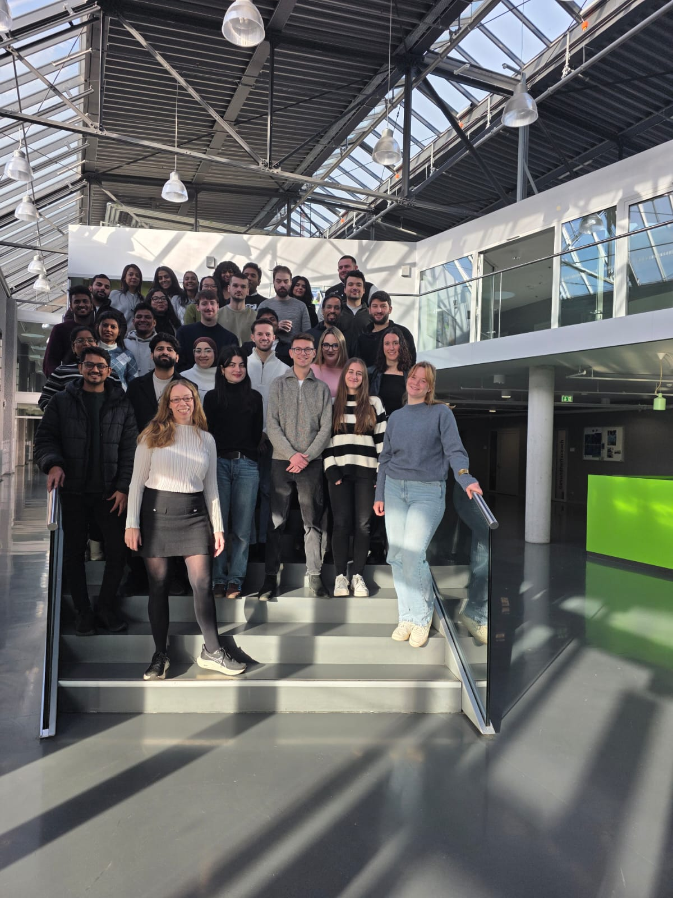
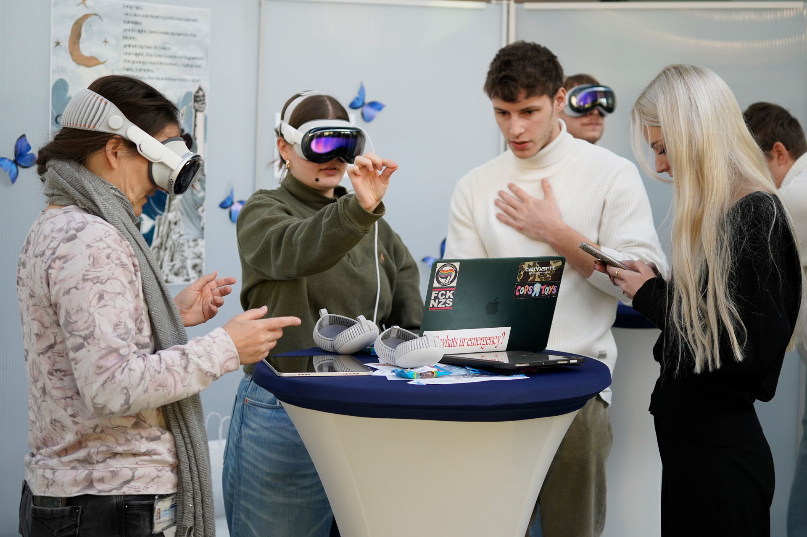
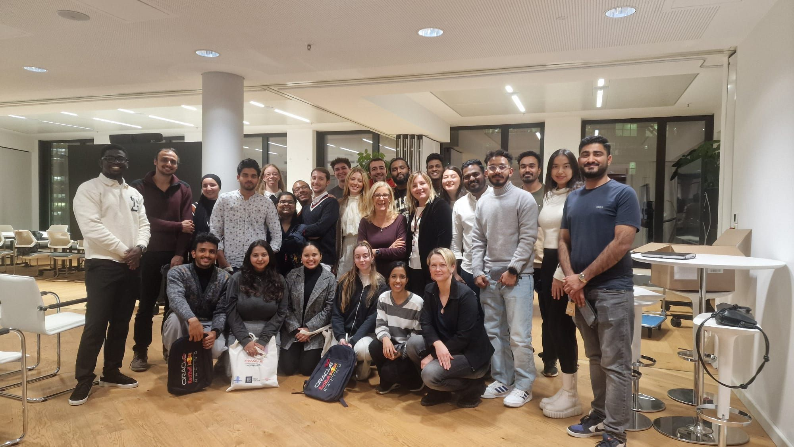
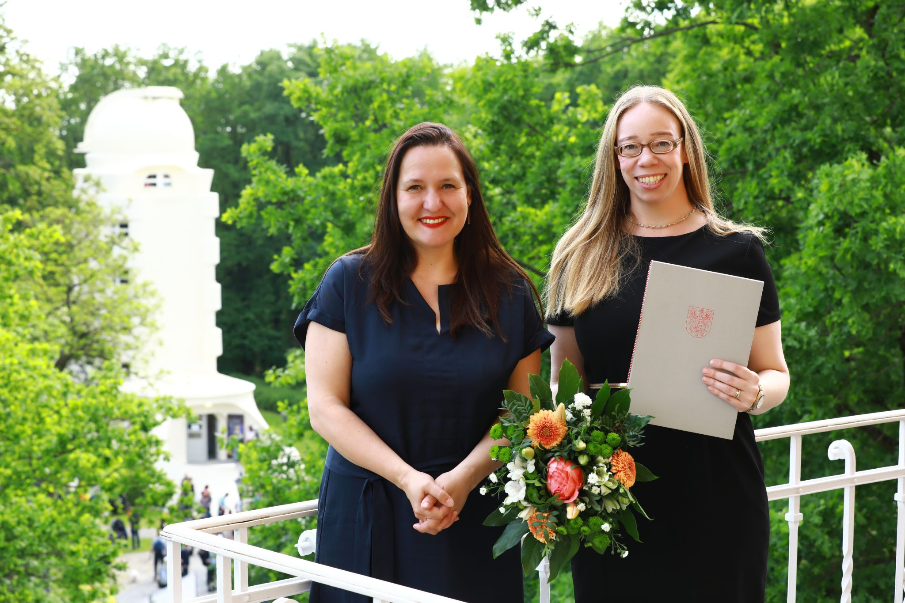

Ich verbinde strategisches Marketing mit den Möglichkeiten moderner KI-Methoden — in Forschung, Lehre und Praxiskooperationen mit Unternehmen, die wirklich etwas bewegen wollen.
Wer ich bin, was mich antreibt
Seit September 2022 bin ich Professorin für Digitales Marketing an der Technischen Hochschule Wildau — und es ist ein absoluter Traumberuf. Zuvor leitete ich sieben Jahre einen Innovationsinkubator beim Tagesspiegel in Berlin, wo ich mit Kunden aus den Bereichen Gesundheit, Digitalisierung und Mobilität zusammenarbeitete und Ideen der Zukunft Raum gab.
2024 wurde ich mit dem Brandenburger Landeslehrpreis für mein Modul „International Marketing Management" ausgezeichnet — einem der renommiertesten Lehrpreise des Landes, verliehen von Wissenschaftsministerin Dr. Manja Schüle. Meine Dissertation an der TU München wurde zudem mit dem Dr.-Tyczka-Preis ausgezeichnet. Praktische Stationen führten mich zur Robert Bosch Stiftung, zur Daimler AG und zu Tempus Corporate (ZEIT Verlag).
Ich glaube, dass eine Ausbildung ohne KI nicht mehr geht — und dass Wirtschaft und Gesellschaft durch einen cleveren Umgang mit KI enorm profitieren können. In Wildau verbinde ich genau das: Lehre auf Augenhöhe, Praxiskooperationen mit Unternehmen wie Oracle, Mercedes-Benz und Kinova sowie Forschung zu den drängendsten Fragen unserer digitalen Gegenwart. Wenn ich nicht an der Hochschule bin, findet man mich auf einem Segelboot.
Praxiskooperationen mit Unternehmen und Institutionen

Masterstudierende der TH Wildau entwickelten gemeinsam mit Kinova KI-basierte Konzepte für den Kundenservice der Zukunft: mehrsprachig, wartezeitslos, skalierbar — und mit echter Kundenzufriedenheit als Ziel.

Studierende aus 14 Nationen erkundeten Rituale und Traditionen und schufen eine Ausstellung auf drei Ebenen: Apple Vision Pro, iCampus-Browser und physische Installation — in Kooperation mit der Filmuniversität Babelsberg KONRAD WOLF.

Jährliche Masterclass mit Oracle-Expertinnen direkt an der TH Wildau: Von Go-to-Market-Strategien über Analytics-Methoden bis zu kreativen Event-Formaten — praxisnah, inspirierend und mittlerweile eine echte Tradition.
Auszeichnung für KI in der Hochschullehre

Am 4. Mai 2024 verlieh Brandenburgs Wissenschaftsministerin Dr. Manja Schüle auf dem Potsdamer Tag der Wissenschaften die Brandenburger Wissenschaftspreise. Prof. Dr. Lydia Göse erhielt den Landeslehrpreis für ihr Modul „International Marketing Management" an der TH Wildau — ausgezeichnet unter dem Motto „Künstliche Intelligenz in der Hochschullehre".
Der Lehransatz: Kein separates KI-Modul, sondern Integration in jedes Thema über drei Stufen — von der analogen Handarbeit über KI-Unterstützung bis zur vollständig KI-basierten Lösung. Wie früher mit dem Taschenrechner: erst verstehen, dann gezielt einsetzen.
Was ich mitbringe
Zielgruppenanalyse, Positionierung, Kampagnenplanung, Marktforschung — mit einem Blick für das Wesentliche statt für Buzzwords.
Praktische Erfahrung mit LLMs, Prompt Engineering, KI-gestützter Content-Erstellung und Tool-Stacks für Marketing-Workflows.
Texten für verschiedene Formate und Zielgruppen — von Fachkommunikation bis Social-Media-Copy, analog wie digital.
15 Jahre Hochschullehre, Praxiskooperationen mit internationalen Unternehmen und preisgekrönte didaktische Konzepte für KI-integrierte Ausbildung.
Was mich als nächstes beschäftigt
Wie können mittelständische Unternehmen KI-Tools sinnvoll in ihre Marketing-Prozesse integrieren — ohne Effizienz auf Kosten von Authentizität zu erkaufen? Das ist die Frage, die mich antreibt.
Von der Intuition zur Entscheidung — wie Daten und Analytics Marketing-Entscheidungen substanziell verbessern können, ohne den kreativen Kern zu verlieren.
Kooperationen und Partnerschaften
Lass uns sprechen
Bereit für eine Zusammenarbeit?
Ich freue mich über Anfragen zu Praxiskooperationen, Gastvorträgen, Forschungsprojekten und gemeinsamen Initiativen rund um Digitales Marketing und KI.
lydia.goese@th-wildau.de LinkedIn-Profil